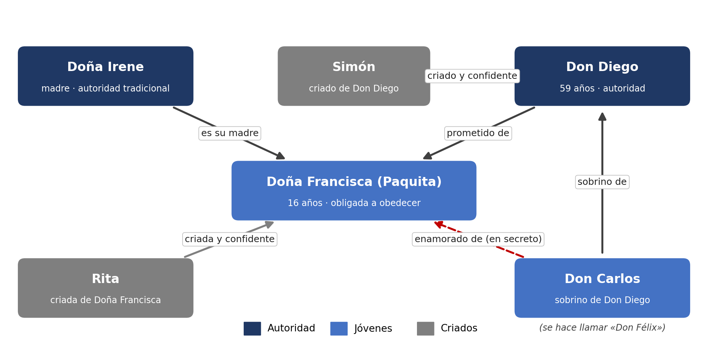

Míralo antes de empezar a leer. Fíjate en quién tiene autoridad sobre quién.

Quién es quién
Don Diego
Relación. Prometido de Doña Francisca; tío de Don Carlos.
Papel en el conflicto. Autoridad que, al final, se cuestiona a sí misma.
Doña Irene
Relación. Madre de Doña Francisca.
Papel en el conflicto. Autoridad tradicional; defiende el matrimonio concertado sin cuestionarlo.
Doña Francisca (Paquita)
Relación. Hija de Doña Irene; prometida a Don Diego; enamorada de Don Carlos.
Papel en el conflicto. Joven obligada a obedecer, dividida entre el deber y el deseo.
Don Carlos
Relación. Sobrino de Don Diego; amante de Doña Francisca (con el nombre falso «Don Félix»).
Papel en el conflicto. Joven que desafía, con límites, la autoridad de su tío.
Rita
Relación. Criada de Doña Francisca.
Papel en el conflicto. Confidente; facilita la comunicación entre los jóvenes.
Simón
Relación. Criado de Don Diego.
Papel en el conflicto. Confidente de Don Diego.